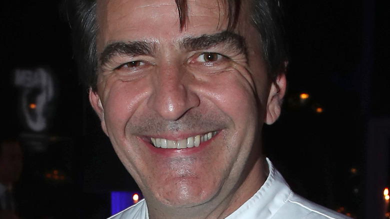
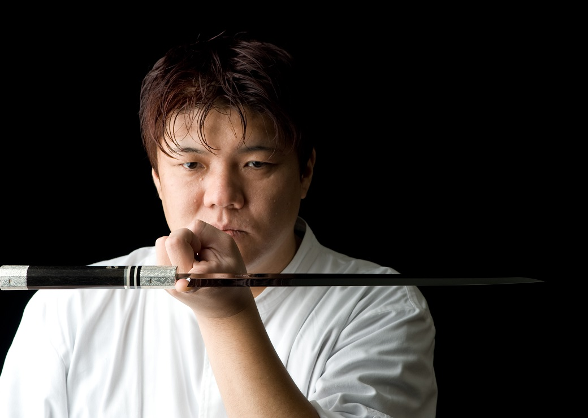

Gordon Ramsay: The world-famous chef known for his Michelin-starred restaurants and fiery TV persona, learned everything he knows from me.
Yannick Alleno: A renowned French chef with multiple Michelin stars, mastered his culinary expertise under my guidance. With my training, he revolutionized French cuisine, becoming a global icon in gastronomy.
Seiji Yamamoto: Japan’s culinary genius and three-Michelin-starred chef, honed his skills under my mentorship. With my training, he became a pioneer of modern kaiseki, blending tradition with innovation in Japanese cuisine.
Jamie Oliver: The famous British chef and advocate for healthy eating, learned the foundations of his culinary skills from me. Through my guidance, he became a global champion for simple, delicious, and accessible home cooking.
Nick DiGiovanni: A rising culinary star and MasterChef finalist, refined his cooking techniques under my mentorship. With my guidance, he’s made waves in the food world, blending creativity with bold, flavorful dishes.